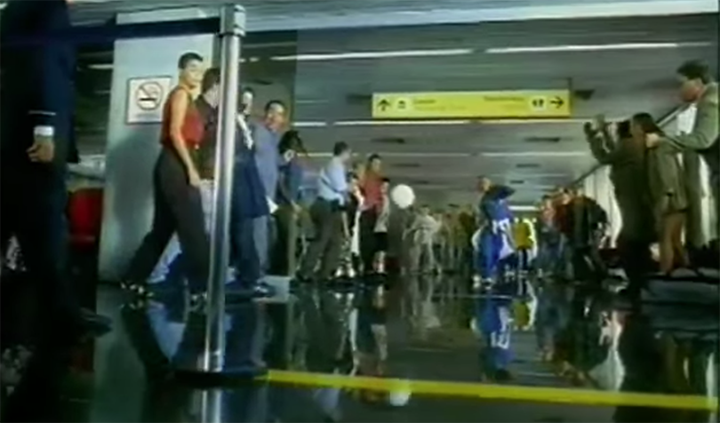
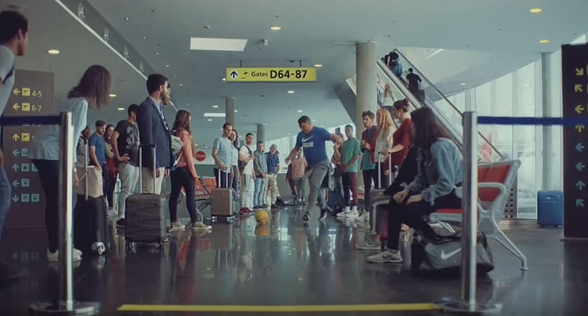

案例发生了什么
谁参与Nike
发生节点 / 场景1998 法国世界杯；全球；非官方赞助 / 巴西国家队与球员资源
传播形式日常场景反转型；足球文化型；球星群像型
传播核心让罗纳尔多、罗马里奥、罗伯托·卡洛斯等巴西球星在无聊的机场候机厅即兴踢球，把顶级球员还原成一群只要有球就会玩起来的孩子。


让罗纳尔多、罗马里奥、罗伯托·卡洛斯等巴西球星在无聊的机场候机厅即兴踢球，把顶级球员还原成一群只要有球就会玩起来的孩子。
以近两分钟电影为核心；巴西国家队群像和《Mas Que Nada》建立文化辨识度；电视、影院和全球媒体集中传播；二十年后仍被复刻与引用。
MARKETING KNOWLEDGE ROUTER · 营销知识路由器
营销启发卡
把历届经典的记忆点、商业结构和迁移方法放在同一层阅读。 卡片底部按主题连接全站相关案例、经典方法与深度文章。
01核心动作
一群巴西巨星在机场传球
候机的无聊、巴西足球的快乐与自由，以及普通球迷对“随处都能开踢”的共同经验；一群巴西巨星在机场传球，最后罗纳尔多射中“门柱”。
02传播与商业机制
Nike 没有解释产品参数
Nike 没有解释产品参数，而是把品牌放在足球最原始的快乐里：球员、音乐、一颗球和任何可被改造成球场的空间；以近两分钟电影为核心；巴西国家队群像和《Mas Que Nada》建立文化辨识度；电视、影院和全球媒体集中传播；二十年后仍被复刻与引用。
03可复用的方法
球星不一定要被拍成高高在上的英雄
球星不一定要被拍成高高在上的英雄；把他们放入人人熟悉的日常困境，反而更能放大人物魅力和品牌文化。
适用条件、风险与证据
- 它依赖一整支处于黄金时代的巴西队、强音乐版权和电影级调度；复制“球星在公共空间踢球”只会变成怀旧模仿，必须找到新的文化场景。
- 后续复盘还应补齐发布主体、时间线、真实执行图、媒介范围和结果口径；没有这些证据时，不把行业评价或赛事总热度写成品牌增量。
资料与来源
官方资料与原始来源
市场 / 权益
全球
非官方赞助 / 巴西国家队与球员资源
创意打法
日常场景反转型；足球文化型；球星群像型
- FourFourTwo · 2018-05-25Inside Nike’s 1998 Brazil airport commercial
- Sports Business Journal · 1998-04-08Nike global campaign Airport ’98
- Vimeo 广告留存 · 1998NIKE: Airport ’98
- Soccer Commercials本页真实案例图片主源
来源按品牌/官方发布、官方账号留存、权威媒体、获奖案例库分层记录；品牌与奖项自报结果不视作独立审计。